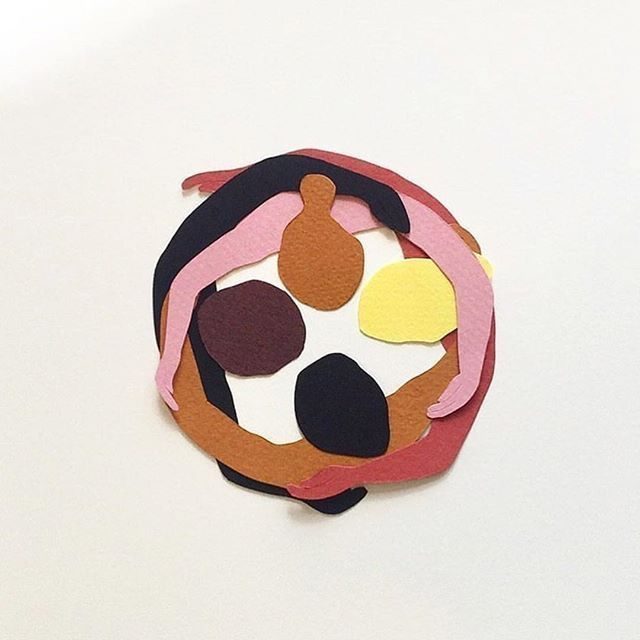

I personally have very much enjoyed these past few weeks and getting to learn web design. I love graphic design and consider myself to be a very visual person. So the whole process of getting to design webpages and websites has been incredibly fun for me. That is not to say that learning HTML and CSS has not been tedious or without its challenges. I would say the most difficult aspect of these languages has been learning how to position and center items. Incorporating functions like fixed, relative, and absolute has tested my patience throughout the process. However, after a very lengthy YouTube tutorial, I felt that I had a good handle on the language. Moreover, what motivated me throughout was that my end products could look the way I actually wanted. In other words, the ends justified the means.
Here is a landing page that I was able to create with just CSS and HTML:

Then came bootstraps...
With that in mind, the introduction of bootstraps has been incredibly helpful in alleviating the more painful aspects of frontend development. Functions such as calling on a container class and then implementing a ”row” and “col” to set up centered layouts have proved more than helpful on multiple occasions. Moreover, I think that everything is much more customizable with the array of buttons, cards, togglers, and icons to choose from. The programmer now no longer has to go through the headache of setting up applications, because the platform already supplies all the needed functionality.
This is a replica site of my workplace that I was able to create by incorporating bootstraps into my code:
So it's that easy...
though, thats not to say Bootstrap is a walk in the park. There is a lot to digest; with their numerous functions, it very much feels like its own language and less of a supplemental functionality. That being said, while referencing it, you should also make a concerted effort to learn it. This became most apparent while trying to format various navbars. I felt that my positioning was constantly off and my collapse toggle was not properly implemented. What I came to realize was that the best course of action was to color-block all of the containers, rows, and columns. When playing around with arrangement, I then could better understand the modality of function calls. As well as track the movement and positioning of my blocks.
Takeways...
All of this to say, learning a new language is not supposed to be easy. It is an opportunity to acquire new skills and to be better than you were before. I look forward to all the new applications that I will be able to create based on my current UI experience. As well as the future acquisitions I will develop based on the work to come.